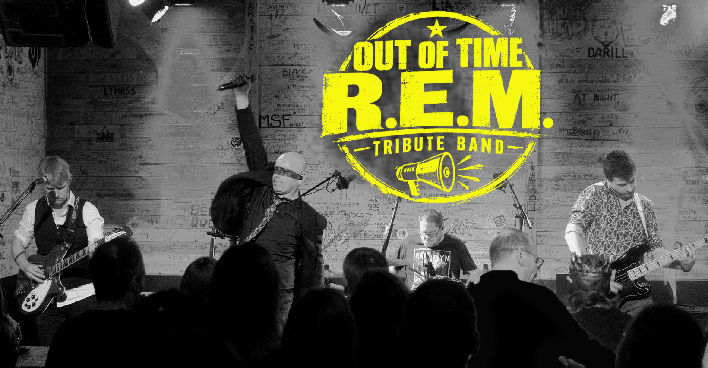
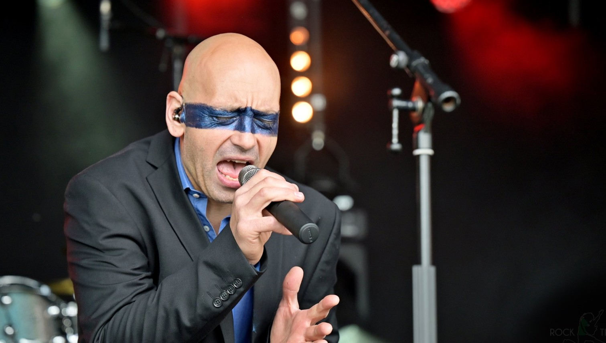

The songs
The energy
The spirit!
The energy
The spirit!
The R.E.M. experience — live
BOOK THE BAND →★
AUTHENTIC SOUND
The spirit of R.E.M.
♟
PROFESSIONAL BAND
Experienced & passionate
♫
LIVE SHOW
Emotion & energy
◎
EUROPEAN BOOKING
Belgium · Germany · Europe
WATCH OUR LIVE VIDEO
NEXT DATES
07.11.26
06.02.27
21.08.27
GAURAIN-RAMECROIX
Ultimate Tribute · Belgium
Ultimate Tribute · Belgium
03.12.27
ALL DATES →
ABOUT THE BAND
Out of Time is a Belgian tribute band dedicated to the music and live spirit of R.E.M. From the explosive rock of Orange Crush to the emotion of Everybody Hurts and the timeless energy of Losing My Religion, the show travels across the band's catalogue with a strong focus on live atmosphere.
Available for festivals, clubs, cultural events and private events across Belgium, Germany and Europe.
BOOKING →BOOK OUT OF TIME
Looking for a professional R.E.M. tribute for a festival, club or event? Send us your project, date and location. We will get back to you with availability and technical details.
Festivals · Clubs · Events · Germany · Belgium · Europe